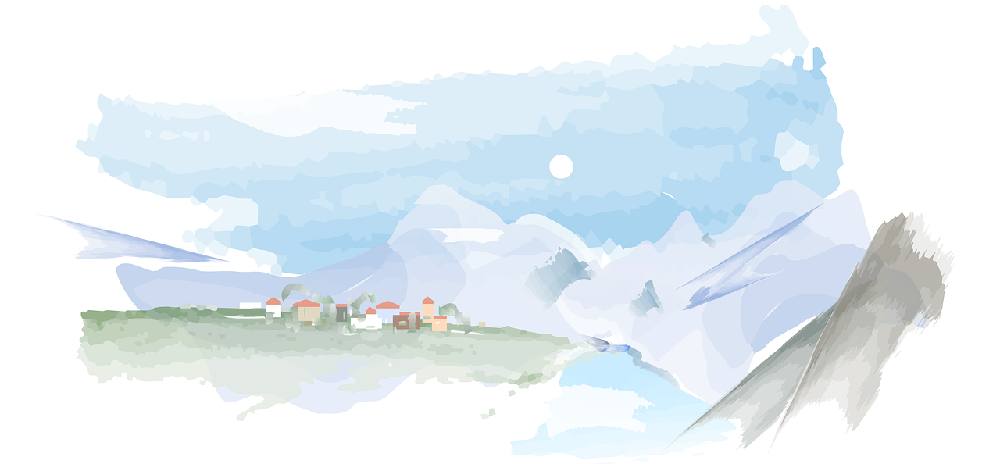
千葉と茨城の県境の街「柏たなか」と東葛地域・つくばエクスプレス沿線の各種情報マップを作成しています。
マップ一覧
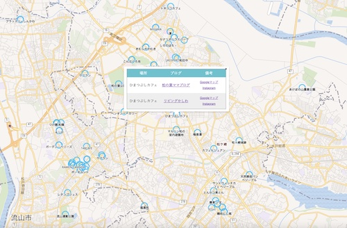
柏・流山周辺の地域ブロガーおすすめスポットの地図です。柏市、流山市、野田市、守谷市、松戸市などの地域ブログが紹介しているお店などの記事を地図とリンクさせて表示します。
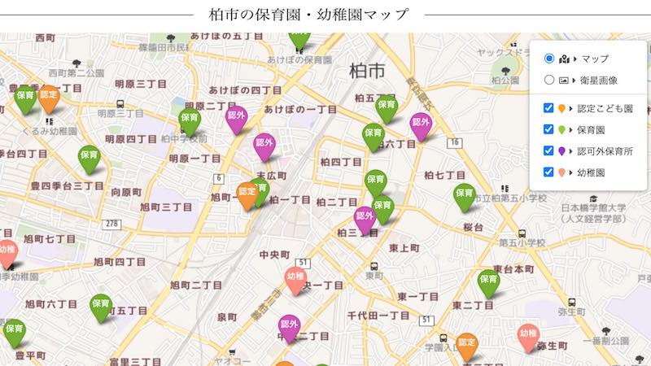
柏市内にある保育園・幼稚園のマップです。2021年4月以降の毎月の待機児童数などを場所と合わせて確認できます。「柏市子育て情報 はぐはぐ柏」の情報を参照して作成・更新しています。
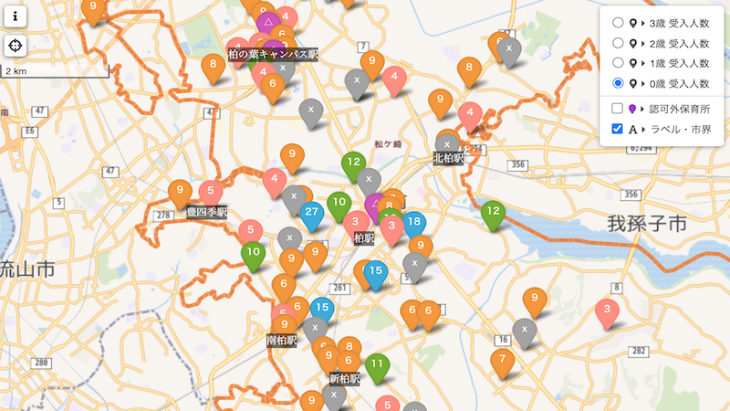
柏市内にある保育園の2023年4月入園に向けた受入予定人数を示すマップです。保活の際にご活用ください。「柏市子育て情報 はぐはぐ柏」の情報を参照して作成・更新しています。
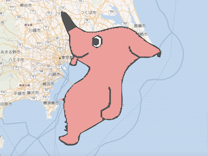
千葉県の不思議ないきもの「チーバくん」を地図上に表示したファンアート的なウェブ地図です。この場所はチーバくんのどこ？を調べたり、鉄道路線図などを重ね合わせたりできます。
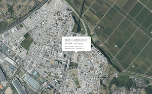
千葉県柏市の柏たなか土地登記図マップです。2024年4月に公開された法務省法務局が提供する登記所備付地図データに基づき、柏たなか地区の土地登記の区画などを表示します。
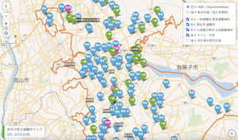
千葉県柏市の指定避難場所・避難所のマップです。各避難場所の収容可能人数や併設設備の情報も含めています。自宅周辺の避難場所のチェックにご活用ください。
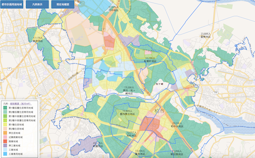
千葉県柏市の人口と都市計画の情報を表示するマップです。柏市の各種の公開情報などをもとに、建物や都市計画用途地域の指定状況、人口、水害ハザードマップ等を表示します。
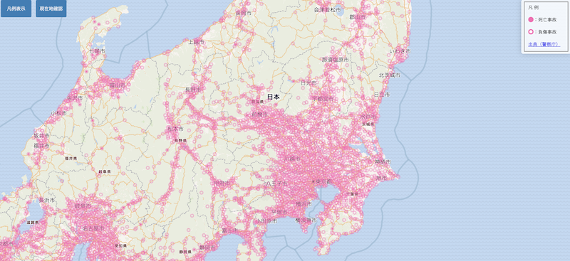
日本全国を対象にした、警察庁の交通事故統計情報(2019年〜2022年分)約130万件を地図上に表示するウェブマップです。日頃の安全意識を高めるためにご活用ください。
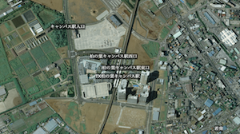
千葉県柏市の過去から現在までの空中写真を、国土地理院が提供する地理院タイルを参照して表示します。柏市周辺のまちづくりの変遷を散策しながら体感してください。
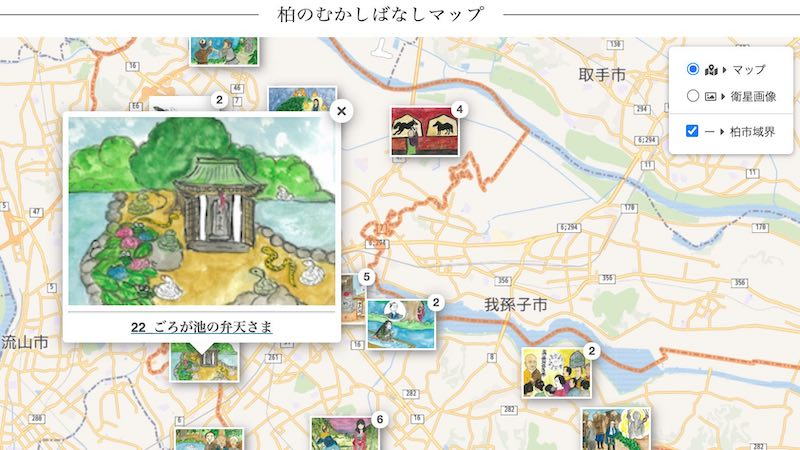
柏市内のむかしばなしの舞台を、地図と位置情報から散策できるマップです。柏市観光協会が提供する「柏のむかしばなし」の情報を転載・二次利用して作成しています。
地図コンテンツではありませんが、柏たなか駅前エリアのまちづくり方針について、当初の計画と異なる開発計画が進んでいる問題に対して住民と柏市で意見交換しました。（2022年12月更新）